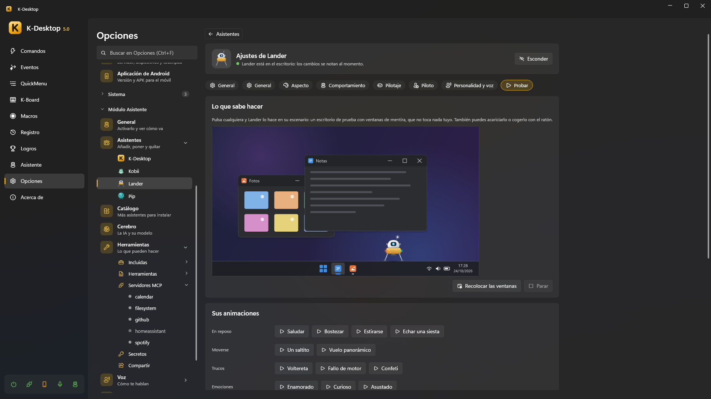

Escaparate
En la ficha de cada asistente instalado, la pestaña Probar lo enseña en un escenario: un pequeño escritorio de
mentira para él solo (720×405 al 125 %, con barra de tareas, bandeja, reloj y tres ventanas de mentira: Notas, Fotos y una
Calculadora que se abre cuando toca), dibujado fuera de la pantalla por otra copia de tu asistente
(KDesktop.exe --assistant-showcase) y enseñado en vivo en la pestaña. El usuario puede acariciarlo o cogerlo con el ratón
sobre la imagen, y elegir cada cosa que sabe enseñar (una a la vez: otra, o Parar, corta la anterior).

Tu asistente no sabe que está en un escenario: recibe el monitor, la barra de tareas y las ventanas del escenario en su
World, las mueve y las pulsa con IWindowServices como siempre, y nada de él se pone nunca encima de la pantalla del
usuario. Ahí tiene una carpeta de datos propia, vacía, y sus ajustes por defecto más lo que cambió el usuario.
Lo que enseña el host solo
Sin que hagas nada:
- las entradas y salidas por motivo (se va y se vuelve a cargar; una entrada se da por acabada cuando ha entrado y su
cuerpo ha dejado de moverse, 7 s como mucho; tras una salida vuelve con
Reloaded, sin espectáculo); - los estados durante unos segundos (hablando, con un nivel de voz de mentira);
- las cuatro reacciones;
- los gestos que no necesitan ventana:
Announce,Communicate,Markjunto al reloj,PointAta la bandeja,GoToal ratón,Scande la ventana de notas,Typingen ella; - lo que hace con una ventana, como un paso de una orden:
PressButtonpara minimizar, maximizar y cerrar la ventana de notas,MoveWindowal otro lado,ActivateWindowde las fotos, yWaitForWindowmientras se abre la calculadora. Tu gesto llama aCommiten el momento justo y la ventana cambia entonces. Lo que no sabes hacer lo hace igual el escenario y lo dice el bocadillo, como en el uso normal.
Sus propias animaciones
Un baile, un truco, cómo juega con la pelota… Ponlas en Showcase (id, nombre por idioma y grupo: Idle, Moving,
Playing, Feelings, Tricks u Other) y hazlas en PlayShowcaseAsync: empieza al momento, haga lo que haga, acaba
cuando termine (K-Desktop espera hasta 30 s) y para enseguida si se cancela el token; devuelve false si no conoces el id o
ahora no puedes.
public IReadOnlyList<ShowcaseItem> Showcase { get; } =
[new("dance", new Dictionary<string, string> { ["en"] = "Dance", ["es"] = "Bailar" }, ShowcaseGroup.Tricks)];
public async Task<bool> PlayShowcaseAsync(string id, CancellationToken ct)
{
if (id != "dance") return false;
StartDance();
try { await Task.Delay(2500, ct); }
finally { StopDance(); }
return true;
}
Los asistentes sin código enseñan como propias las animaciones de su character.json que no enseña nada más (walk,
sleep, surprised, click, catch).
Vídeos para el catálogo
En el manifiesto, "showcase" lista vídeos cortos de lo que enseña (un WebP animado, un GIF o un PNG del paquete, 8 MB
como mucho cada uno), para que el catálogo los enseñe sin cargar tu código ni descargar el paquete entero. item es el id
de lo que enseña: uno de K-Desktop (enter.summoned, state.thinking, react.celebration, gesture.announce,
window.minimize…) o uno tuyo, que entonces lleva name (por idioma) y group.
"showcase": [
{ "item": "enter.summoned", "clip": "showcase/enter.webp" },
{ "item": "dance", "clip": "showcase/dance.webp", "name": { "en": "Dance", "es": "Bailar" }, "group": "tricks" }
]
Al instalar, K-Desktop comprueba que cada vídeo está y es una imagen, y que ningún elemento tiene dos. El catálogo los enseña en la ventana de detalle de cada asistente, donde el usuario elige cuál ver: solo se descargan los vídeos que se abren (por rangos HTTP), nunca el paquete entero. Los asistentes instalados no se quedan con los vídeos: solo los usa el catálogo.
Grabarlos
No hace falta hacerlos a mano. Compila con el escaparate encendido y los objetivos de compilación del SDK ponen el paquete
compilado en el escenario de un K-Desktop que indiques, fuera de la pantalla, le hacen hacer cada cosa que sabe enseñar,
graban un vídeo de cada una que hace (WebP animado sin pérdida, 25 fotogramas por segundo, 10 s como mucho) en
Package\showcase\, y reescriben el "showcase" de Package\assistant.json (solo esa parte del archivo) antes de
empaquetar:
dotnet build -c Release -p:AssistantShowcase=true -p:KDesktopExe="C:\Ruta\A\KDesktop.exe"
Tarda unos minutos. Los vídeos se graban en inglés (el texto del bocadillo, las ventanas del escenario);
-p:AssistantShowcaseLanguage=es (o fr, de, it, pt) los graba en otro. Se quedan en tus fuentes, así que las
compilaciones siguientes solo los empaquetan; vuelve a grabar cuando cambie lo que enseña. Lo que no sabe hacer no se graba.
Sin código, lanza tú el escenario sobre la carpeta de tu paquete:
KDesktop.exe --assistant-showcase <carpeta> --record <carpeta>\showcase --manifest <carpeta>\assistant.json
Las animaciones largas y movidas dan vídeos grandes (una criatura que nunca está quieta: cerca de 1 MB por segundo), y todos viajan en el paquete: haz cortas las tuyas.